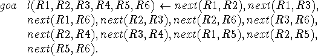

John McCarthy
Computer Science Department
Stanford University
Stanford, CA 94305
jmc@cs.stanford.edu
http://www-formal.stanford.edu/jmc/
1982
It is attractive to regard an algorithm as composed of the logic determining what the results are and the control determining how the result is obtained. Logic programmers like to regard programming as controlled deduction, and there have been several proposals for controlling the deduction expressed by a Prolog program and not always using Prolog's normal backtracking algorithm. The present note discusses a map coloring program proposed by Pereira and Porto and two coloring algorithms that can be regarded as control applied to its logic. However, the control mechanisms required go far beyond those that have been contemplated in the Prolog literature.
Robert Kowalski (1979) enunciated the doctrine expressed by the formula
ALGORITHM = LOGIC + CONTROL
THE PEREIRA-PORTO LOGIC PROGRAM
REDUCING THE MAP
KEMPE TRANSFORMATIONS
REALIZING THE REDUCTION ALGORITHM BY CONTROL OF THE PEREIRA-PORTO LOGIC
REALIZING THE KEMPE TRANSFORMATION ALGORITHM
Acknowledgements
References
About this document ...
The formula isn't precise, and it won't be precise until someone proposes a precise and generally accepted notion of how control is to be added to an expression of the logic of a program. Nevertheless, the idea is attractive, and I believe it can be made to work for some interesting class of programs. It is analogous to my comparison of epistemology and heuristics or Chomsky's competence and performance.
Pereira and Porto (1980) give a logic program for coloring planar maps with four colors and discuss how ``selective backtracking'' can reduce the search involved in coloring a map from that done by a straightforward PROLOG execution of the same program.
The discussion by Pereira and Porto treats coloring maps purely as an example of logic programming, and the improvements they discuss apply to all logic program systems. We shall consider two mathematical ideas about map coloring that go back to Kempe (1879), the paper containing the original false proof of the four color theorem. While Kempe's proof was false, the ideas are good and were used in almost all subsequent work including the recent successful proof.
The question is whether an algorithm involving these ideas can be regarded as a form of control adjoined to the basic logic program or whether they necessarily involve a new program. If they are to be regarded as control structures, it is not yet clear how they are best expressed. Of course, it is not hard to write a completely new program in PROLOG or any other language expressing the algorithms, and this has been done. The interpreted programs color a map of the United States. However, it is also interesting to try to regard the algorithms as control attached to the Pereira-Porto logic program for coloring a specific map.
Kempe (or perhaps someone still earlier) noticed that countries with three or fewer neighbors present no problem. No matter how the rest of the map is colored, there is always a color available for such a country. We use this in to improve a Pereira-Porto map coloring program by ``reducing the map'' by removing such countries and doing our trial-and-error coloring on the reduced map, confident that once the reduced map is colored, the coloring can be extended to the omitted countries.
The idea is even more powerful, because eliminating countries with three or fewer neighbors may remove enough neighbors from some other countries so that they have three or fewer neighbors and can themselves be removed. Therefore, the reduction process should be continued until a completely reduced map is obtained in which all countries have at least four neighbors. The maps of the states of the U.S. and the countries of Europe, Asia, Africa and South America all reduce to null maps when countries with three or fewer neighbors are successively eliminated
Likewise the map of Figure 1 reduces to the empty map. Thus we may remove country 4 with two neighbors and country 5 with three neigbors. This leaves all the remaining countries with three or fewer neighbors, so the second cycle of reduction leaves the null map, reduced map. Therefore, when we colored in the reverse order 1, 2, 3, 6, 4, 5, each country is colored without changing the color of any previously colored country.
If the programmer performs this reduction before he writes the goal statement, he will write

This PROLOG program will run with only the most local backtracking. Namely, after R1 has been chosen arbitrarily, several values will have to be tried for each of the variables R1, R2, R3, R6, R4, and R5, but once a value has been found that is compatible with the previously determined variables, it won't have to be changed again.
The new PROLOG program is logically equivalent to the previous program because it is just a rearrangement of the literals of a conjunction. However, the programmer has done the control. The interesting question is whether the reduction can be expressed in some way that can be regarded as adding control to the original logic, i.e., without changing the original logic.